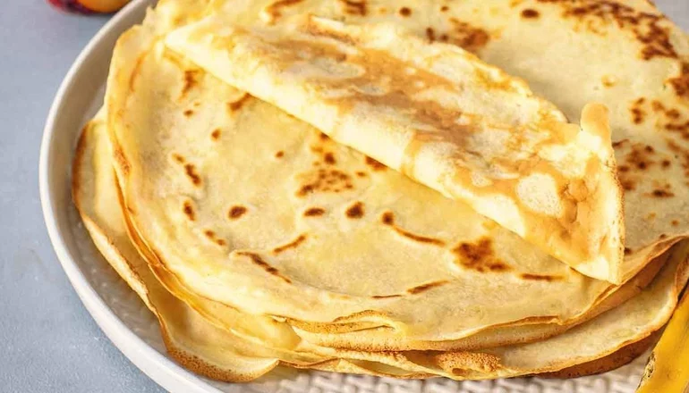

Como hacer panqueques: receta fácil y rápida
Panqueques caceros son una excelente opción para comer en familia.

Ingredientes:
- 1 taza de harina leudante
- 1 huevo
- 1 chorro de aceite de oliva
- 3/4 taza de leche (180 ml)
Preparación:
- Reunir todos los ingredientes. Si no tenes harina leudante, podes usar harina de trigo normal y añadir una cucharadita de levadura en polvo.
- Coloca la harina en un bol, añade el huevo y la leche. Mezcla bien hasta que se integren todos los ingredientes y no queden grumos.
- Para terminar la mezcla, agregar un chorro de aceite de oliva y mezclar bien. Verás que el aciete hace que se terminen de disolver los grumos. (Truco: si la masa está muy espesa podes agregar un poco más de leche).
- Para hacer los panqueques, calienta una sarten a fuego medio-bajo con un poquito de aceite o manteca. Cuando la sartén este caliente, añade una cuchara de la mezcla y dejala al fuego hasta que empiece a salir burbujas en la superficie, entonces damos la vuelta para cocinar el otro lado.
- Para comerlos podes agregarle dulce de leche y si los queres salados podes agragarle jamon cocido ó crudo, salame ó el que vos quieras.

Foto del panqueque en la sartén

Foto del panqueque con dulce de leche

Foto del panqueque salado